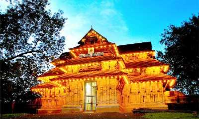

Thrissur
The cultural capital of Kerala, the Poorams or temple festivals in Thrissur draw in thousands of people every single year as these carnivals encapsulate every single part of Kerala's rich heritage. These are a hotbed of folk art performances and heritage tours that will give you an in depth look into some of the grandest traditions of the State. From majestic elephants to colourful pulikali processions to the world renowned Thrissur Pooram, there is always a festive atmosphere in the air. The district is also the abode of several cultural centres like Kerala Kalamandalam, Sahitya Academy and the Sangeetha Nataka Academy. Thrissur is a place one must visit at least once in their lifetime. The people, swaying with the beats of the chenda, shall help you understand the true heart and spirit of Kerala.
Tourist Attractions

Vadakkumnnathan Temple
With a collection of beautiful Mural paintings, some of which are more than 400 years old, this gigantic 1000 year old temple and historical structure is famous for the Nataraja Mural near the main gate.
Athirappilly Waterfalls
Located 60 km from Thrissur city, Athirapally Falls is a haven for flora and fauna alike. It is a popular picnic spot and the scenic beauty of the waterfall offers spectacular visuals for visitors.